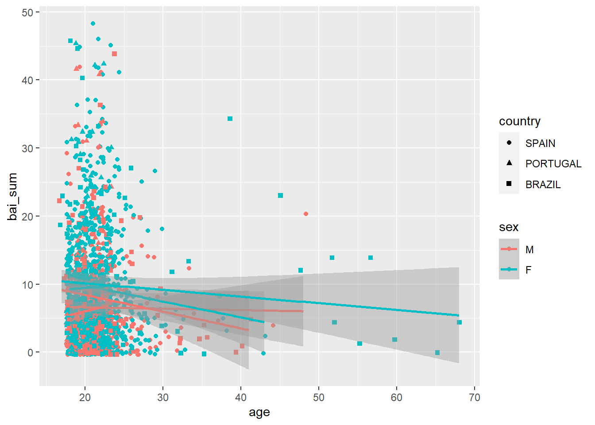
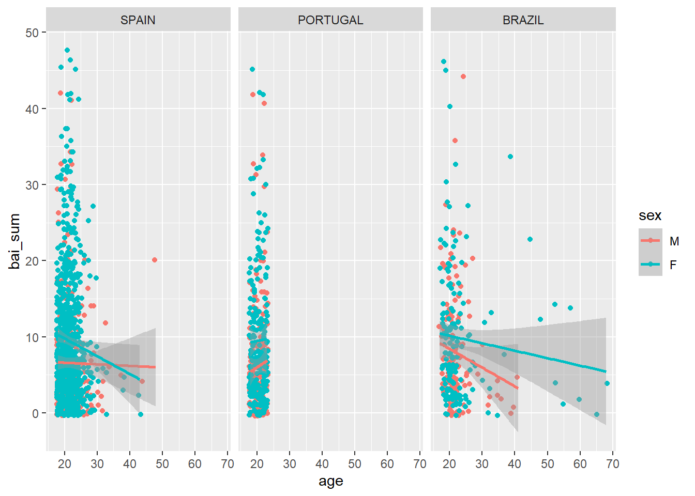
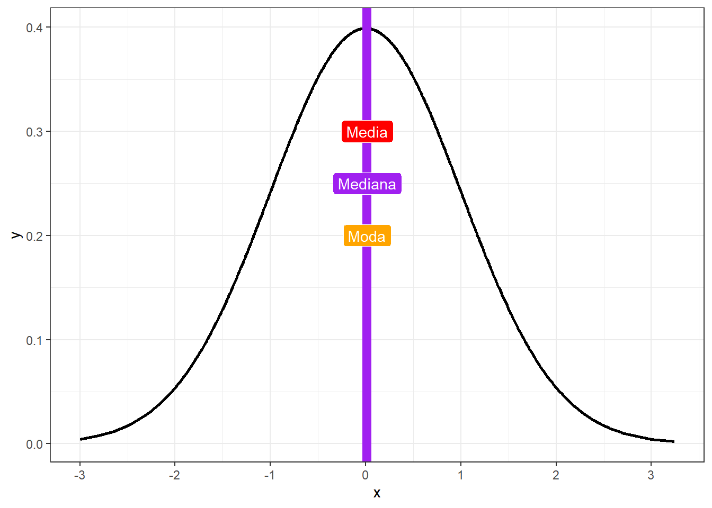

Capítulo 3 Teste T
Objetivos do capítulo
1. Apresentar o teste T
2. Discutir os pressupostos de execução do teste T
3. Realizar gráficos relacionados à comparação de médias
4. Apresentar e interpretar métricas de tamanho do efeito
5. Dar exemplos relacionados à escrita dos resultados 6. Apresentar versões não paramétricas
O Teste T é um teste estatístico frequentemente utilizado para testar hipóteses sobre diferenças entre médias. Por utilizar dados amostrais para estimar um parâmetro (\(\mu\)), ele é um teste parâmetrico. Apenas por um preâmbulo histórico, a origem do Teste T remonta o artigo publicado em 1908 por William Gosset. Na época, em função de seu trabalho na cervejaria Guiness, ele não assinou o artigo, mas apenas usou seu pseudônimo Student, motivo pelo qual o teste T também é chamado de Teste T de Student.
É importante notar que estudantes de Psicologia e profissionais que trabalham com avaliação psicológica costumam ser deparados com uma métrica chamada “T score” (Escore T, as vezes), desenvolvido em 1939 por um professor de Psicologia (William Anderson McCall). Tenha em mente que essa métrica não ter relação com os procedimentos inferenciais relacionados ao teste T a não ser uma similaridade de nome (???; ???).
É possível estipular que o Teste T pode ser utilizado para comparar a média de uma amostra com a média populacional (one sample t test), para comparar duas médias amostrais (two sample t test), ou para comparar duas médias de uma mesma amostra que foi investigada em dois momentos do tempo (paired ou matched t test).
Se assume os seguintes pressupostos funcionais à execução de um Teste T:
(i) Os dados são aleatórios e representativos da população (ii) a variável dependente é contínua (iii) A distribuição dos resultados populacionais é assumida como normal
Quando há o interesse de utilizar o Teste T para comparar os resultados de dois grupos, é também necessário que:
(iv) As variâncias dos grupos seja homogênea (princípio da homocedasticidade) (v) ambos os grupos sejam independentes
Quando se utiliza o Teste T pareado, se viola o princípio da independência, mas é necessário que:
(vi) o tamanho amostral seja o mesmo
Eventualmente, quando os pressupos são violados, versões não-paramétricas podem ser implementadas. A tabela abaixo concatena os testes estatísticos relacionados e, para fins de comparação com outros trabalhos, há autores que sugerem que se use sempre as versões não-paramétricas em resultados obtidos por processos de avaliação psicológica, arguindo que os dados têm nível de medida “ordinal”.
| Versão do teste | Um grupo | Dois grupos independentes | Grupos pareados |
|---|---|---|---|
| Paramétrica | One-sample t test | Two-samples t test | Paired t test |
| Não-paramétrica | Signed rank test | Mann-whitney | Wilcoxon |
3.1 Pesquisa
Base: Livro - R - ASQ SE all age intervals
Neste capítulo, vamos utilizar a pesquisa intitulada “Confirmatory analysis and normative tables for the Brazilian Ages and Stages Questionnaires: Social–Emotional”, publicada em 2019 na Child Care Health Development. Esse trabalho teve dois objetivos. O primeiro visou confirmar a estrutura fatorial de um instrumento utilizado para avaliar competências sociais e emocionais relacionadas ao desenvolvimento infantil (ASQ:SE) e o segundo visou desenvolver tabelas normativas para comparar meninos e meninas. Essa é uma pesquisa muito importante, visto que conta com uma base de dados robusta (mais de 50 mil participantes) e costura psicometria, avaliação psicológica e políticas públicas
3.2 Execução no R
Como exemplo, a variável dependente do teste T tem de ser contínua. Na base de dados específica às crianças de 12 meses (asq_12months), essa variável será computada pela soma de todos os itens da escala. No dplyr, isso é feito pela integração da função mutate com a select
asq_12months <- asq_12months %>%
mutate(total_12 = rowSums(select(., starts_with("q_")), na.rm = TRUE))Uma vez que o interesse é o de comparar os resultados médios obtidos por meninos e meninas aos 12 meses, é necessário a escrita adequada das hipóteses e o nível de significância adotado na análise. Dessa maneira:
\[H_0 = \mu_{meninos} - \mu_{meninas} = 0 \\ H_a = \mu_{meninos} - \mu_{meninas} \neq 0 \\ \alpha = 0.05\]
Em seguida, o processo de testagem da hipótese é feito preliminarmente de maneira gráfica e, em seguida, pela implementação do teste específico. Apesar do gráfico não ser decisivo na tomada de decisão, ele auxilia a visualilzação da distribuição da variável que temos interesse, bem como oferece já um entendimento inicial dos resultados.
Posto que a VI é discreta e a VD é continua (exposta no capítulo @ref(01-estatistica_descritiva)) tanto o gráfico de colunas/barras como o de densidade são úteis. O gráfico de barras tem uma vantagem de ser possível adicionar barras de erros, que serão melhores descritas futuramente.
gridExtra::grid.arrange(
#plot 1
ggplot(asq_12months, aes(x = sex, y = total_12, fill = sex)) +
geom_bar(stat = "summary") +
stat_summary(fun.data = mean_se, geom = "errorbar", width = .2),
#plot 2
ggplot(asq_12months, aes(x = total_12, fill = sex)) +
geom_density(color = NA, alpha=.6)
)## No summary function supplied, defaulting to `mean_se()
Feito isso, o próximo passo é a testagem formal da hipótese. Como exposto, o teste T de duas amostras independentes assume que os resultados da variável de interesse se distribua normalmente e que variância entre os grupos seja homocedástica. Tecnicamente, como o teste T é um caso especial de um modelo de regressão, a normalidade da variável de interesse se refere aos resíduos do modelo e, neste caso pode ser testada pela distribuição marginal dos resultados de ambos os grupos.
A normalidade pode ser avaliada graficamente por QQ-plots e por testes específicos, como o Shapiro-wilk, Anderson-Darling e Jarque Bera.
O QQ plot é um gráfico que reúne a distribuição empírica ordenada dos quantis conta os quantis da distribuição teórica (aqui, normal). Se os dados e a linha diagonal se soprepuserem, isso é uma evidencia de que a distribuição empírica é a mesma da distribuição teórica. Caso haja discrepância, isso aponta para desvio da normalidade.

Apesar do gráfico já ter sido bastante claro e sugerir fortemente desvio da normalidade em ambos os grupos, o teste formal é necessário. O Shapiro-wilk costuma ser utilizado neste caso, uma vez que ele reúne diferentes características positivas no balanço entre erro do tipo 1 e 2. a Hipótese nula desse teste assume que a variável de interesse tem distribuiÇào (aproximadamente) normal. Assim, rejeitar a hipótese nula sugere que esse princípio foi violado e, com isso, o teste T pode ter resultados distorcidos.
## # A tibble: 2 x 2
## sex shapiro
## <fct> <dbl>
## 1 M 1.98e-19
## 2 F 4.80e-17De maneira convergente ao gráfico, o Shapiro-wilk também apontou que o princípio da normalidade foi violado. Entretanto, por finalidades didáticas, as análises continuarão.
A homogeneidade das variâncias pode ser testada pelo teste de Bartlett e Levene. De maneira análoga ao Shapiro-wilk, esses testes assumem como Hipótese nula a homogeneidade das variâncias. Consequemente, a rejeição desse pressuposto pode também trazer resultados distorcidos ao resultado do teste T.
##
## Bartlett test of homogeneity of variances
##
## data: total_12 by sex
## Bartlett's K-squared = 1.1357, df = 1, p-value = 0.2866Diferentemente do pressuposto da normalidade, o pressuposto da homocedasticidade foi preservado.
Agora, finalmente, o teste T.
##
## Two Sample t-test
##
## data: total_12 by sex
## t = 0.36787, df = 1039, p-value = 0.713
## alternative hypothesis: true difference in means is not equal to 0
## 95 percent confidence interval:
## -2.077671 3.036424
## sample estimates:
## mean in group M mean in group F
## 24.91713 24.43775Os resultados trazem a média de ambos os grupos (24.9171271 e 24.437751), a estatística do teste (0.3678679, as vezes chamada de T calculado), os graus de liberdade (1039) e o valor de p 0.7130467. Repare que como o valor de p é superior ao valor estipulado do nível de significância (0.05), falha-se em rejeitar a Hipótese nula, indicando que, apesar de numericamente distintos, os resultados não são estatisticamente significativos.
Como escrever os resultados
Os dados foram analisados por um Teste T de amostras independentes para investigar as diferenças médias nos resultados do desenvolvimento entre meninos e meninas. Os resultados mostraram que os valores médios de meninos e meninas não não são significativamente diferentes (t(1039) = 0.37, p = 0.71). Dessa maneira, as diferenças encontradas podem ser mais bem explicadas por outras fontes de variações.
Com isto concluído, é também possível verificar se existem diferenças em idades mais avançadas. A sintaxe é customizável e torna-se fácil testar a hipótese da diferença, por exemplo, aos 18 meses. Nesse sentido, o teste de hipóteses deve ser normalmente escrito:
\[H_0 = \mu_{meninos} - \mu_{meninas} = 0 \\ H_a = \mu_{meninos} - \mu_{meninas} \neq 0 \\ \alpha = 0.05\]
O gráfico novamente deve ser realizado
gridExtra::grid.arrange(
ggplot(asq_18months, aes(x = sex, y = score, fill = sex)) +
geom_bar(stat = "summary") +
stat_summary(fun.data = mean_se, geom = "errorbar", width = .2),
ggplot(asq_18months, aes(x = score, fill = sex)) +
geom_density(color = NA, alpha=.6))## No summary function supplied, defaulting to `mean_se()
Bem como a verificação do pressuposto de normalidade e homocedasticidade, seguidos pelo teste formal.
##
## Two Sample t-test
##
## data: score by sex
## t = 4.6185, df = 5725, p-value = 3.949e-06
## alternative hypothesis: true difference in means is not equal to 0
## 95 percent confidence interval:
## 1.484680 3.674581
## sample estimates:
## mean in group M mean in group F
## 27.52685 24.94722Diferentemente do anterior, agora o resultado foi significativo (p < 0.01) e deve ser reportado:
Como escrever os resultados
Os dados foram analisados por um Teste T de amostras independentes para investigar as diferenças médias nos resultados do desenvolvimento entre meninos e meninas com 18 meses idade. Os resultados mostraram que os valores médios de meninos (M = 27.5, SD = 21.8) e meninas (M = 24.9, SD = 20.3) são significativamente diferentes (t(5725) = 4.62, p < 0.01).
É importante ter uma atenção especial à significância estatística. De forma alguma, um resultado que rejeita a hipótese nula (como o de agora) deve ser entendido como “aceitação da hipótese alternativa”, tampouco como evidência de causalidade. É fundamental lembrar que o valor de P se refere à probabilidade de encontrar a estatística de teste calculada, ou uma ainda mais exterma, assumindo que a hipótese nula é verdadeira. Apesar de algo contra-intuitivo (e talvez desanimador), é assim que a estatística frequentista funciona.
3.3 Tamanho do efeito
Resultados significativos não são nenhum pouco informativos em relação ao tamanho do efeito. Essa métrica tem mais contato com as perguntas originalmente realizadas em uma pesquisa e é entendida como uma medida objetiva e padronizada da magnitude de um efeito observado independente da significância estatística. Assim, o tamanho do efeito pode ser considerado um indicador da relevância clínica dos grupos (em cenário biométrico, do tratamento ou condiçào).
Existem duas famílias principais no framework do tamanho do efeito, que são a família “d” e a família “r”. Tecnicamente, quando comparamos médias, usamos o d de cohen para calcular a distância entre as médias das distribuições normais sobrepostas.
A interpretação é a seguinte:
| Cohen’s d | Interpretação |
|---|---|
| d \(\geq\) 0.8 | Alto |
| d \(\geq\) 0.5 | Medio |
| d \(\geq\) 0.2 | Pequeno |
| d < 0.2 | Irrelevante |
##
## Cohen's d
##
## d estimate: 0.12216 (negligible)
## 95 percent confidence interval:
## lower upper
## 0.07025972 0.17406037Agora é possível agregar ambos os resultados e a escrita iria por esse caminho.
Como escrever os resultados
Os dados foram analisados por um Teste T de amostras independentes para investigar as diferenças médias nos resultados do desenvolvimento entre meninos e meninas com 2 anos de idade. Os resultados mostraram que os valores médios de meninos (M = 27.5, SD = 21.8) e meninas (M = 24.9, SD = 20.3) são significativamente diferentes (t(5725) = 4.62, p < 0.01), apesar do tamanho do efeito ser negligenciável (d = 0.12).
3.4 Versão robusta do teste T
Em muitas situações, os pressupostos do teste T são violados e parte da literatura argumenta que o teste T é robusto o suficiente para lidar com isso (Lumley et al. 2002), equanto outra parte sugere que é melhor optar por versões com médias aparadas ou não-paramétricas (Field and Wilcox 2017). No entanto, o que não costuma ser discutido com tanta frequência é que a modificação do teste estatístico utilizado, necessariamente, modifica a hipótese da pesquisa. Nesse sentido, a decisão de alterar o teste estatístico deve ser feito com justificativa teórica por parte do pesquisador.
O pacote WRS apresenta versões robusta do Teste T. Ainda, o próprio R base oferece uma solução para condições em que a homogeneidade dos grupos não é aceita, que é o Welch-test. Esse teste é feito assumindo estipulando var.equal = F na sintaxe previamente exposta ou removendo este argumento por completo.
3.5 Mann-whitney
A chamada versão não paramétrica do teste T é o teste de Wilcoxon-Mann-Whitney. Quando os pressupostos do teste T são violados, o Mann-Whitney é um forte candidato para sua substituição. Se de um lado esse teste supera tais pressupostos, por outro ele responde a uma hipótese diferente daquela que o teste T trabalha. Enquanto o teste T compara médias, o Mann-whitney compara os valores ranqueados (postos). Nota-se que ele não é um teste para comparar medianas e que isso só ocorre em condições restritas.
##
## Wilcoxon rank sum test with continuity correction
##
## data: score by sex
## W = 4368187, p-value = 9.902e-06
## alternative hypothesis: true location shift is not equal to 0Os resultados foram convergentes ao previamente encontrado e, em outras palavras, tambem apoiam a rejeição da hipótese nula. O tamanho do efeito também pode ser calculado ao implementar \(Z/\sqrt{(n)}\). O output padrão do R não oferece essa informação, mas o pacote coin dispõe dessa métrica.
## [1] 4.41932Assim, implementando a fórmula, o tamanho do efeito seria aproximadamete 0.06.
Como escrever os resultados
Os dados foram analisados pelo teste Wilcoxon-Mann-Whitney para investigar as diferenças nos resultados do desenvolvimento entre meninos (Mdn = 25, IQR = 30, M = 27.53, SD = 21.61) e meninas (Mdn = 20, IQR = 25, M = 24.95, SD = 20.34) com 18 meses de idade. Os resultados indicaram que os resultados foram significativos (W = 4368187, p < 0.01), mas com efeito negligenciável (0.12).
3.6 Teste T e regressão
Conforme alertado, o Teste T é um caso particular deum modelo de regressão que assume que a variável independente é uma dummy. Assim, \(b_0\) (intercepto) é o grupo que recebeu o valor 0 e \(b_1\) (inclinação) é o grupo que recebeu o valor 1. Caso isso não tenha sido definido inicialmente, basta estipular que a variável é um fator e o R cuidará de todo o resto.
Nesse caso, o R atribuiu os meninos como intercepto o valor médio dos meninos e a inclinação \(b_1\) é justamente a diferença entre os valores (24.95-27.53). Nesse caso, -2.58. A estatística F é equivalente a \(t^2\) do teste t em sua versão tradicional (assumindo variâncias iguais entre grupos, adicionando var.equal = T à função).
##
## ===============================================
## Dependent variable:
## ---------------------------
## score
## -----------------------------------------------
## sexF -2.580***
## (0.559)
##
## Constant 27.527***
## (0.387)
##
## -----------------------------------------------
## Observations 5,727
## R2 0.004
## Adjusted R2 0.004
## Residual Std. Error 21.117 (df = 5725)
## F Statistic 21.331*** (df = 1; 5725)
## ===============================================
## Note: *p<0.1; **p<0.05; ***p<0.013.7 Aspectos matemáticos
[Em desenvolvimento]
3.8 Resumo
Este capítulo introdução à lógica por detrás do Teste T, ensinou sua execução, interpretaçào e escrita dos resultados. Frequentemente, os pressupostos que são exigidos à execução desse teste são violados e o teste de Wilcoxon-Mann-Whitney costuma ser implementado em substituição. Nesse sentido, este capítulo também apresentou os aspectos básicos deste teste. Finalmente, métricas relacionados ao tamanho do efeito foram calculadas e discutidas. É importante levar deste capítuloq que o Mann-Whitney e o teste T testam hipóteses diferentes e que significância estatística não é sinônimo de relevância clínica.
References
Field, Andy P., and Rand R. Wilcox. 2017. “Robust Statistical Methods: A Primer for Clinical Psychology and Experimental Psychopathology Researchers.” Behaviour Research and Therapy 98 (November): 19–38. https://doi.org/10.1016/j.brat.2017.05.013.
Lumley, Thomas, Paula Diehr, Scott Emerson, and Lu Chen. 2002. “The Importance of the Normality Assumption in Large Public Health Data Sets.” Annual Review of Public Health 23 (1): 151–69. https://doi.org/10.1146/annurev.publhealth.23.100901.140546.